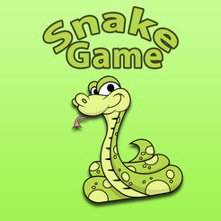

Vuelve unos de los clásicos más divertidos y adictivos de todos los tiempos, el famoso BrickBreacker. Tendrás que mover el bloque que hay en la parte inferior de la pantalla para hacer rebotar la bola y destruir los ladrillos que llenan la pantalla. Para controlar la raqueta deberás mover las flechas del teclado hacia los lados que deseas moverte, flecha izquierda para el lado izquierdo y flecha derecha para el lado derecho. Si la pelota cae al vacío, habrás perdido la partida.
SNAKE: EL JUEGO

Hay que conseguir que la serpiente se coma todos los bocaditos que encuentre a su paso. Con cada bocadito que se come, la serpiente se hace más larga, con lo que cada vez será más difícil guiarla sin que se muerda a sí misma o sin chocar con el borde del cuadro.Para jugar con el juego de la serpiente, tienes que utilizar las teclas de las flechas. en la dirección que desees moverte
PONG
Pong está basado en el deporte de tenis de mesa, el famoso juego creado por Altari, ha vuelto a nuestra platadorma más fuerte que nunca .El objetivo consiste en que uno de los jugadores consiga más puntos que el oponente al finalizar el juego. Estos puntos se obtienen cuando el jugador adversario falla al devolver la pelota.Jugarás contra una Inteligencia Artifial muy dura de vencer, el que consiga 3 puntos gana la partida